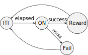
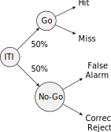
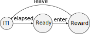

State Machines
When designing operant behaviour assays in systems neuroscience, it is useful to describe the task as a sequence of states the system goes through (e.g. stimulus on, stimulus off, reward, inter-trial interval, etc). Progression through these states is driven by events, which can be either internal or external to the system (e.g. button press, timeout, stimulus offset, movement onset). It is common to describe the interplay between states and events in the form of a finite-state machine diagram, or graph, where nodes are states, and arrows are events.
For example, a simple reaction time task where the subject needs to press a button as fast as possible following a stimulus is described in the following diagram:

The task begins with an inter-trial interval (ITI), followed by stimulus presentation (ON). After stimulus onset, advancement to the next state can happen only when the subject presses the button (success) or a timeout elapses (miss). Depending on which event is triggered first, the task advances either to the Reward state, or Fail state. At the end, the task goes back to the beginning of the ITI state for the next trial.
The exercises below will show you how to translate the above diagram of states and events into an equivalent Bonsai workflow, which can be easily adapted and modified to describe many different operant behaviour tasks.
Exercise 1: Declaring and logging external hardware events
In this worksheet, we will be using an Arduino or a camera as an interface to detect external behaviour events. For experimental purposes, it is very helpful to record and timestamp all of these events, independently of which state the task is in.

- Connect a digital sensor (e.g. beam-break, button, TTL) into Arduino pin 8.
- Insert a
DigitalInputsource and set it to Arduino pin 8. - Insert a
PublishSubjectoperator and set itsNameproperty toResponse. - Insert a
Timestampoperator. - Insert a
CsvWritersink and configure itsFileNameproperty with a file name ending in.csv. - Run the workflow and activate the digital sensor a couple of times. Stop the workflow and confirm that the events were successfully timestamped and logged in the
.csvfile.
Note
In order to avoid hardware side-effects, it is highly recommended to declare all hardware connections at the top-level of the workflow, and interface all trial logic using subject variables. This will have the added benefit of allowing for very easy and centralized replacement of the rig hardware: as long as the new inputs and configurations are compatible with the logical subjects, no code inside the task logic will have to be changed at all.
- Right-click the
DigitalInputsource, selectCreate Source (bool)>BehaviorSubject, and set itsNameproperty toLed. - Insert a
DigitalOutputsink and set it to Arduino pin 13.
Exercise 2: Inter-trial interval and stimulus presentation
Translating a state machine diagram into a Bonsai workflow begins by identifying the initial state of the task (i.e. the beginning of each trial). It is often convenient to consider the inter-trial interval period as the initial state, followed by stimulus presentation.

- Insert a
Timersource and set itsDueTimeproperty to be about 3 seconds. - Insert a
Sinkoperator and set itsNameproperty toStimOn. - Double-click on the
Sinknode to open up its internal specification.
Note
The Sink operator allows you to specify arbitrary processing side-effects without affecting the original flow of events. It is often used to trigger and control stimulus presentation in response to events in the task. Inside the nested specification, Source1 represents input events arriving at the sink. In the specific case of Sink operators, the WorkflowOutput node can be safely ignored.
StimOn:

- Insert a
Booleanoperator followingSource1and set itsValueproperty toTrue. - Find and right-click the
Ledsubject in the toolbox and select the optionMulticast. - Run the workflow a couple of times and verify that the sequence of events is progressing correctly.
Note
Opening a new connection to the Arduino can take several seconds due to the way the Firmata protocol is implemented. This may introduce a slight delay in starting the task. This delay is only present at the start of execution and will not affect the behavior of the state machine.

- In the main top-level workflow, insert a
Delayoperator and set itsDueTimeproperty to a couple of seconds. - Copy the
StimOnoperator and insert it after theDelay(you can either copy-paste or recreate it from scratch). - Rename the new operator to
StimOffand double-click it to open up its internal representation. - Set the
Valueproperty of theBooleanoperator toFalse. - Run the workflow a couple of times. Is it behaving as you would expect?
- Insert a
Repeatoperator after theStimOff. - Run the worklow. Can you describe in your own words what is happening?
- Optional: Draw a marble diagram for
Timer,StimOn,Delay, andRepeat.
Exercise 3: Driving state transitions with external behaviour events

- Delete the
Delayoperator. - Insert a
SelectManyoperator afterStimOn, and set itsNameproperty toResponse. - Double-click on the
SelectManynode to open up its internal specification.
Note
The SelectMany operator is used here to create a new state for every input event. Source1 represents the input event that created the state, and WorkflowOutput will be used to report the end result from the state (e.g. whether the response was a success or failure).
Response:

- Subscribe to the
Responsesubject in the toolbox. - Insert a
Booleanoperator and set itsValueproperty toTrue. - Insert a
Takeoperator and set itsCountproperty to 1. - Delete the
Source1operator. - Connect the
Booleanoperator toWorkflowOutput. - Run the workflow a couple of times and validate the state machine is responding to the button press.
Exercise 4: Timeout and choice
Response:

- Inside the
Responsenode, insert aTimersource and set itsDueTimeproperty to be about 1 second. - Insert a
Booleanoperator and set itsValueproperty toFalse. - Join both
Booleanoperators with aMergecombinator. - Connect the output of
TaketoWorkflowOutput. - Run the workflow a couple of times, opening the visualizer of the
Responsenode.
Describe in your own words what the above modified workflow is doing.
Exercise 5: Specifying conditional task outcomes

- Insert a
Conditionoperator after theStimOffnode, and set itsNameproperty toSuccess. - In a new branch from
StimOff, insert anotherCondition, and set itsNameproperty toMiss. - Double-click on the
Conditionoperator to open up its internal specification.
Note
The Condition operator allows you to specify arbitrary rules for accepting or rejecting inputs. Only inputs which pass the filter specified inside the Condition are allowed to proceed. It is often used to represent choice points in the task. Inside the nested specification, Source1 represents input events to be tested. The WorkflowOutput node always needs to be specified with a bool input, the result of whether the input is accepted (True) or rejected (False). Usually you can use operators such as Equal,NotEqual,GreaterThan, etc for specifying such tests.
Miss:

- Insert a
BitwiseNotoperator afterSource1.
Why did we not need to specify anything for the Success condition?
- In the top-level workflow, insert a
SelectManyoperator after theSuccesscondition and change itsNameproperty toReward. - Inside the
Rewardnode you can specify your own logic to signal the trial was successful. For example, you can make the LED blink three times in rapid succession:
Reward: 
- Insert a
Timernode and set both theDueTimeand thePeriodproperties to 100ms. - Insert a
Modoperator and set theValueproperty to 2. - Insert the
Equaloperator and leave itsValueproperty at 0. - Find and right-click the
Ledsubject in the toolbox and select the optionMulticast. - Insert a
Takeoperator and set theCountproperty to 6. - Insert the
Lastoperator.
Try out your state machine and check whether you understand the behavior of the reward signal.
Copy the
Rewardnode, paste it after theMisscondition, and change itsNameproperty toFail.Optional: Modify the
Failstate in some way to signal a different trial outcome (e.g. make the LED blink more times, or move a motor).In the top-level workflow, insert a
Mergeoperator and connect to it the outputs of both conditional branches and before theRepeatnode.
Try out your state machine and introduce variations to the task behavior and conditions.
Exercise 6: Go/No-Go task
Implement the following trial structure for a Go/No-Go task.

- Trials should be sampled from a uniform distribution using the
Numericspackage (install fromTools>Manage Packages). - Response events should be based on a button press, and reject events on a timeout.
- Make sure to implement different visual or auditory feedback for either the cue or reward/failure states.
Tip
To sample values from a discrete uniform distribution, you can use the following workflow: 
- Record a timestamped chronological log of trial types and rewards into a CSV file using a
BehaviorSubject.
Exercise 7: Conditioned place preference
Implement the following trial structure for conditioned place preference. enter and leave events should be triggered in real-time from the camera, by tracking an object moving in or out of a region of interest (ROI). Reward should be triggered once upon entering the ROI, and not repeat again until the object exits the ROI and the ITI has elapsed.

Tip
There are several ways to implement ROI activation, so feel free to explore different ideas. Consider using either Crop, RoiActivity, or ContainsPoint as part of different strategies to implement the enter and leave events.